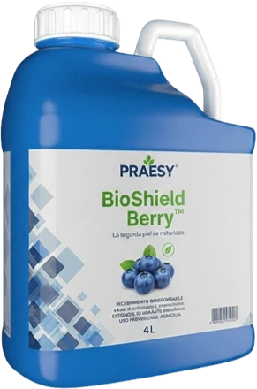
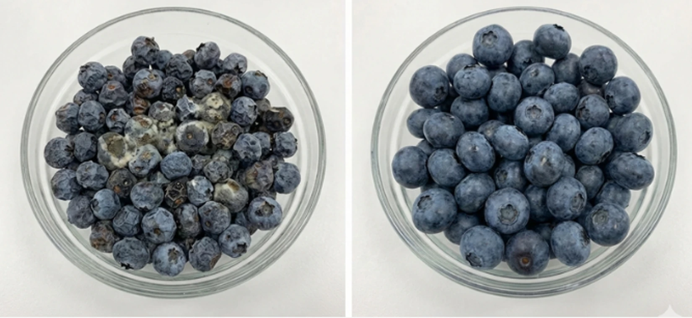
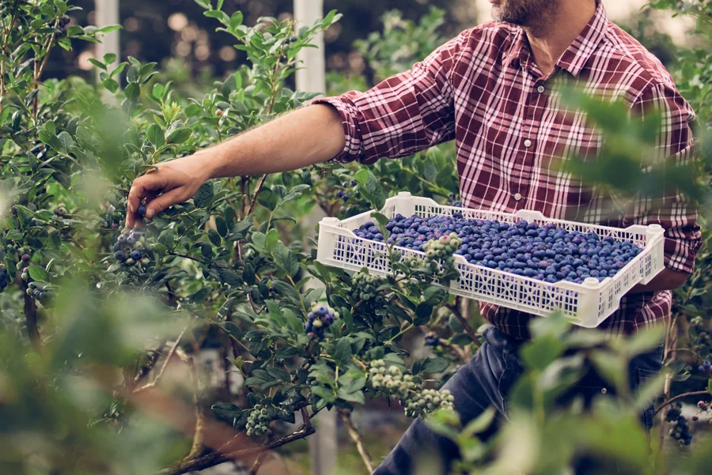
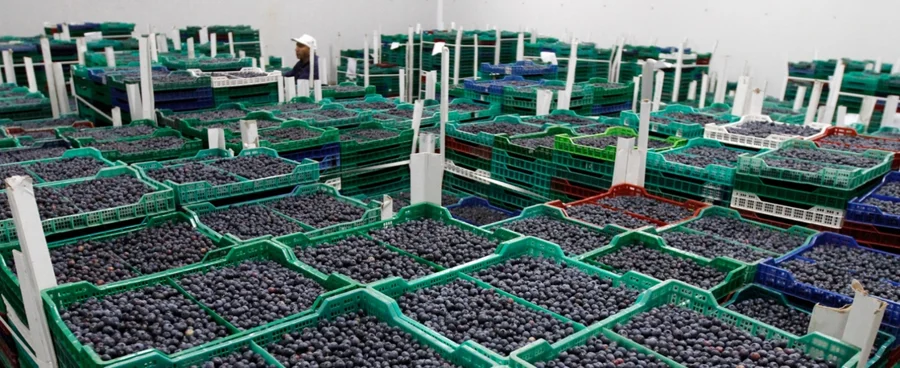
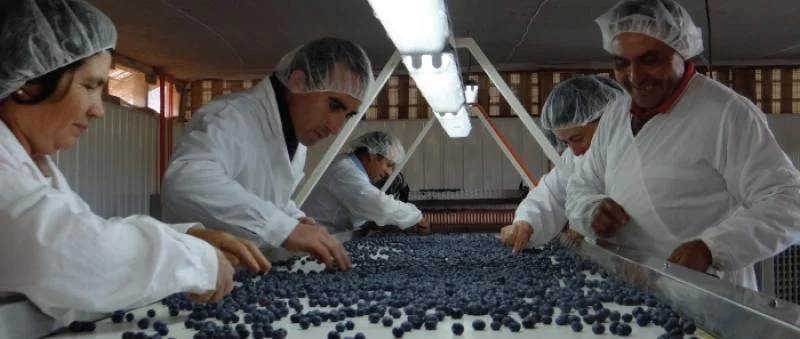
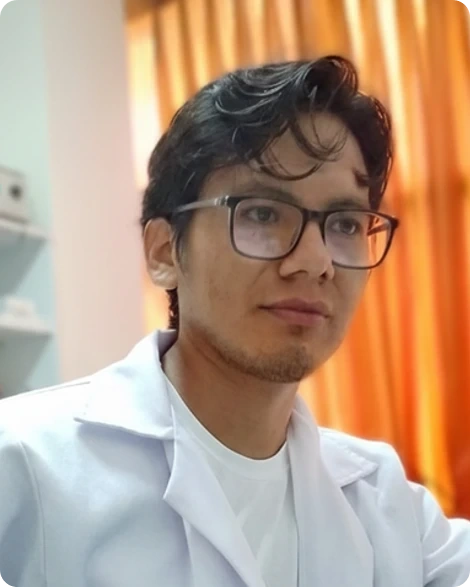

Conservar la humedad
El recubrimiento forma una película semipermeable sobre el fruto. Al retener humedad, busca reducir la pérdida de peso durante el transporte.
BioShield Berry de PRÆSY
Un recubrimiento de grado alimenticio para conservar el arándano peruano en su viaje al mundo.
Descubrir la tecnología ↗
Perú lidera las exportaciones mundiales de arándanos. Para llegar a destino, cada fruto debe conservar su peso, su apariencia y su calidad durante el viaje.
Un retraso logístico alarga el tránsito y da más tiempo a la pérdida de humedad y a la proliferación de microorganismos. La fruta pesa menos y puede perder calidad hasta el punto de que el comprador rechace el lote.
Cifras de la presentación del proyecto. Fuentes citadas por el equipo para 2025: MIDAGRI y Syngenta Perú vía Portal Frutícola.
El recubrimiento forma una película semipermeable sobre el fruto. Al retener humedad, busca reducir la pérdida de peso durante el transporte.
Las nanopartículas incorporan agentes antifúngicos y antimicrobianos. Su liberación prolongada busca limitar el desarrollo de microorganismos en la superficie del arándano.
La formulación combina quitosano y aceite esencial. El equipo describe el 100 % de los ingredientes como de grado alimenticio e indica que seleccionó las sustancias según el criterio GRAS («generalmente reconocidas como seguras») de la FDA.
El equipo logró integrar agentes activos en un sistema estable de nanopartículas y estabilizar los componentes de la formulación.
Las pruebas estandarizadas comparan fruta tratada y sin tratar. El equipo mide la pérdida de masa y estudia la inhibición del crecimiento de hongos. Las fotografías documentan el aspecto de las muestras.

Merma inicial y merma prevista con el tratamiento.
Precio planteado por litro de solución, suficiente para tratar una tonelada métrica de arándanos.
Valor recuperado por tonelada según el escenario del equipo, con un precio de referencia de US$ 6,58 por kilo de arándano.
Valor que el proyecto estima generar a escala de una campaña de exportación.
Las cifras corresponden a las proyecciones de la presentación. La recuperación real depende del precio de la fruta y de la merma de cada operación.
El equipo compara su recubrimiento con un producto de extracto vegetal y con ceras sintéticas. Esta es la evaluación presentada para las tres alternativas.
| Criterio | PRÆSY | Bio Natural Solutions | Ceras |
|---|---|---|---|
| Origen | Quitosano y aceite esencial | Extracto vegetal | Sintético |
| Reduce la pérdida de peso | Sí | Sí | No |
| Conserva la apariencia | Sí | No | No |
| Actividad antimicrobiana | Sí | No | No |
| Prolonga la vida útil | Sí | Sí | Sí |
| Biodegradable | Sí | Sí | No |
El proyecto vincula su propuesta con los ODS 9 (industria, innovación e infraestructura) y 12 (producción y consumo responsables).
PRÆSY plantea incorporar el recubrimiento en el tratamiento poscosecha, una vez seleccionados los arándanos y antes de empacarlos para exportación.

Cultivo y cosecha
Recepción y enfriamiento
Tratamiento poscosechaEl equipo propone presentar el producto en ferias de agroindustria y agroexportación, con pruebas sin costo adicional.
El modelo comercial prevé la negociación directa entre PRÆSY y las empresas agroexportadoras.
La propuesta incluye acompañamiento técnico gratuito como servicio complementario para los clientes.
Ingeniera química con experiencia en el sector comercial y participación en congresos nacionales.

Químico puro con experiencia en I+D y ganador del Programa de Proyectos de Ciencia, Tecnología, Innovación y Emprendimiento (PRO-CTIE).
El proyecto sitúa el tratamiento después de la selección del arándano y antes del empaque para exportación.
El escenario económico contempla un litro de solución por tonelada métrica de fruta, con un precio planteado de US$ 60 por litro.
El equipo ha estabilizado la formulación y trabaja con protocolos de pérdida de masa e inhibición fúngica. En la sección de laboratorio puedes comparar las fotos de las muestras con y sin recubrimiento.
Ver las muestras ↗El modelo comercial contempla muestras en ferias, pruebas de producto sin costo adicional y asesoría técnica gratuita. La venta se negocia directamente con la agroexportadora.